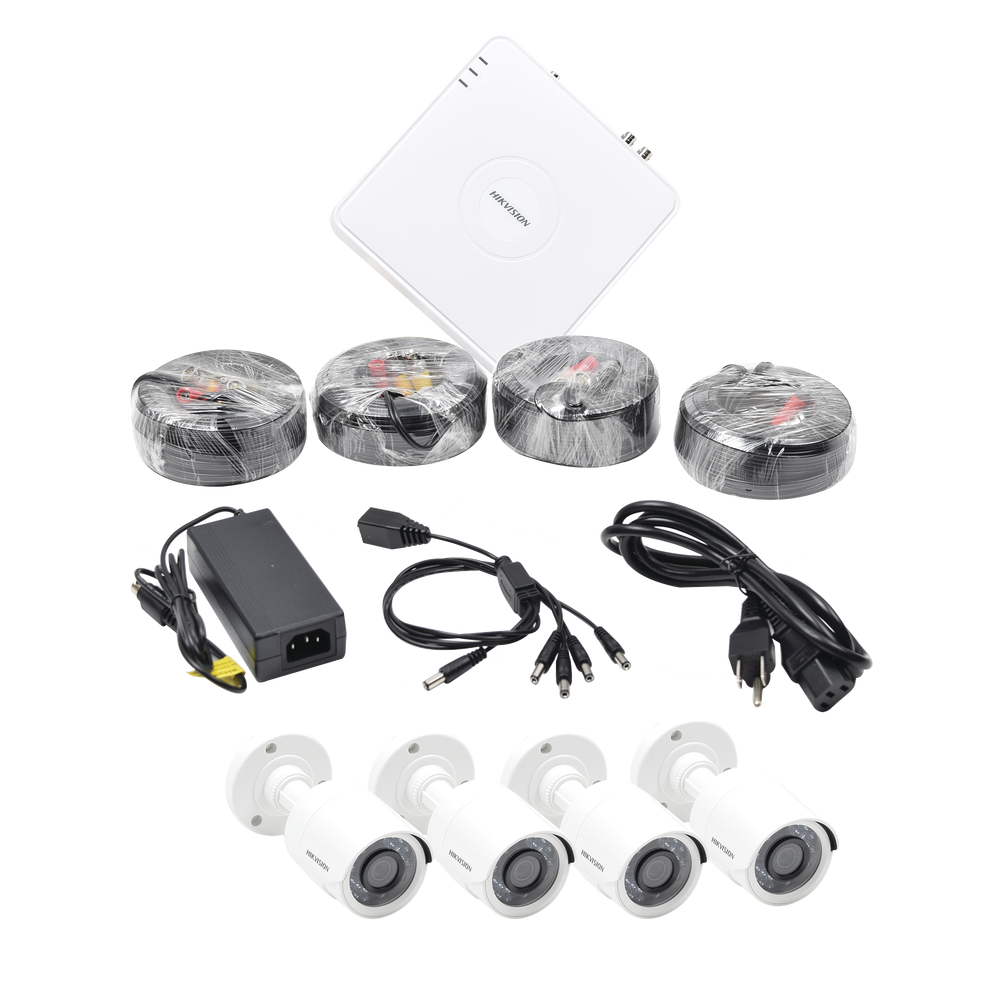

KIT TurboHD 1080p / Hik-Connect / DVR 8 Canales / 4 Cámaras Bala / Cables / Fuente de Poder Profesional

$4,698.56
EL KIT INCLUYE:
1 DVR de 8 canales TURBOHD DS-7108HGHI-F1
4 Cámaras Bullet (Interior / Exterior), DS-2CE16D0T-IRP 2.8mm (Fabricadas en policarbonato)
4 Juegos de cable de 18 mts
1 Fuente de poder: 3.3 Amp.
Garantia: 2 Años